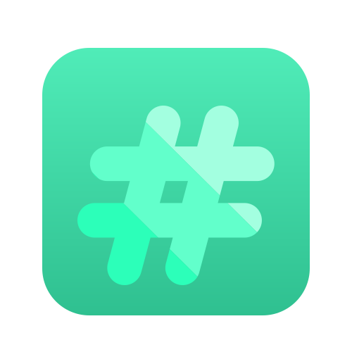

Menu
下载
选项
重置
点击下面的部分，将其添加到你的 readme 中
自定义选项
致谢
API 参考
附录
作者
徽标
颜色参考
贡献
Demo
开发
文档
环境变量
FAQ
特性
反馈
Github 简介 - 关于
Github 简介 - 介绍
Github 简介 - 链接
Github 简介 - 其他
Github 简介 - 技能
安装
教训
证书
Logo
优化
相关
路线图
在本地运行
截图
支持
技术
运行测试
标题和描述
使用方法/示例
谁在使用
编辑器
预览
原始